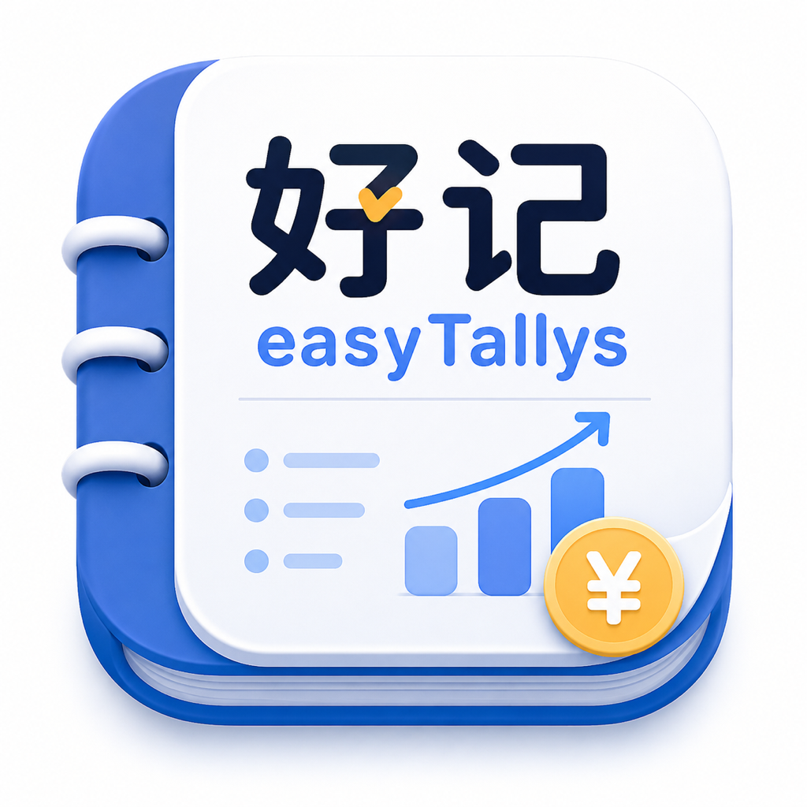
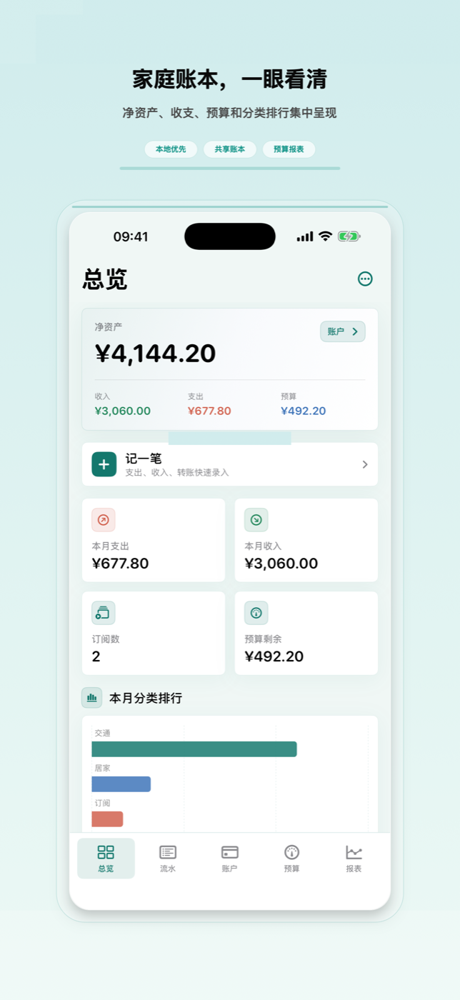
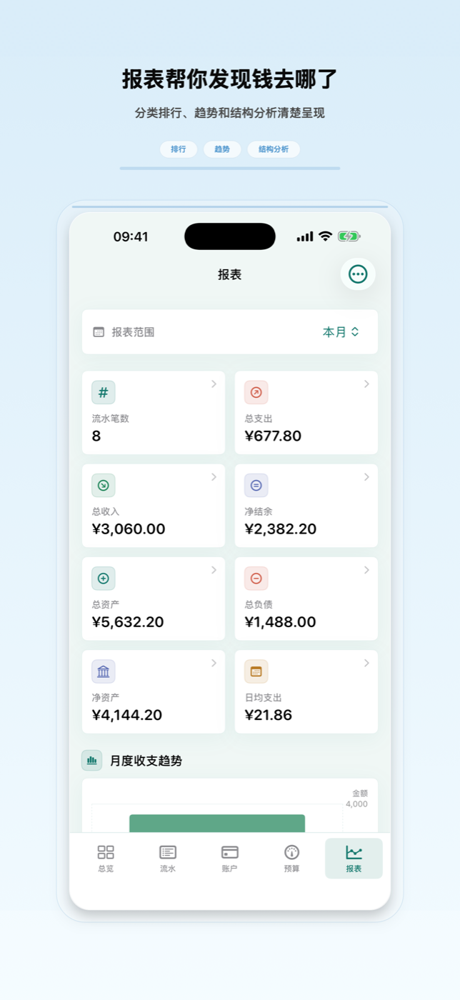
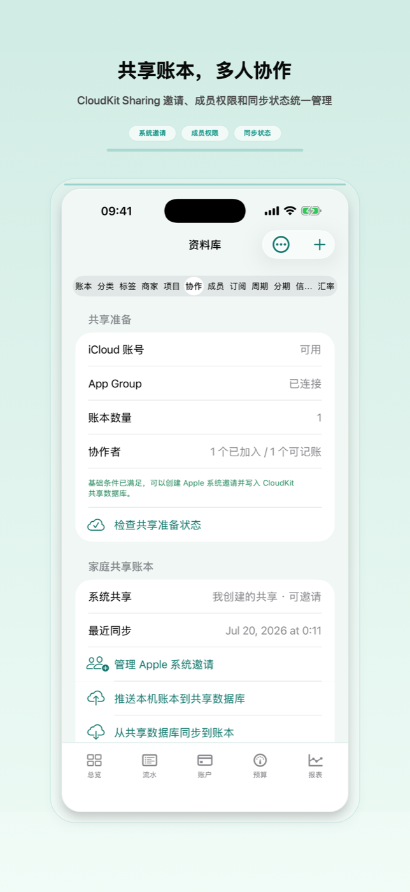
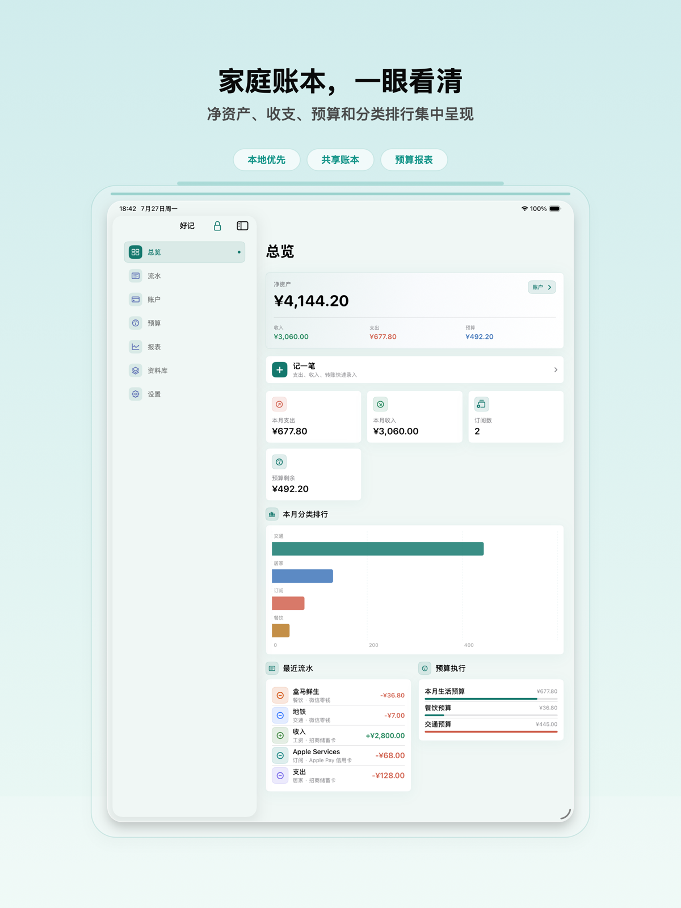

好记 - 让记账更简单
- 新增：在设置界面加入 iCloud 设置入口。
- 修复：首次进入 App 时现在会正确跟随系统语言，并移除了设置界面的内部 App ID 描述。

Apple 设备上的本地优先财务管理
为个人、家庭、旅行、项目和订阅账单做本地优先记账，支持共享账本、预算、报表、Widget、iCloud 同步，以及仅存本机钥匙串的冷钱包保险箱。

已于 2026-08-08 根据 Apple 公开 App Store 数据核对。“好记 - 让记账更简单”现已上架，可在 iPhone、iPad 和 Mac 上免费下载。
记录支出、收入、转账、退款、报销、借贷、分期、手续费和余额调整。
工程内无 StoreKit 商品、无会员/Pro 订阅、无付费墙；无限账本/账户、多币种、iCloud 同步、报表、预算、周期账单、Widget、Watch、快捷指令、主题、隐私锁和 OCR 都免费开放。
支持 JSON、CSV、OFX、QIF、PDF、ZIP 和 Excel 工作流，可识别常见银行 CSV 表头，并把票据图片和本机 Vision OCR 结果保存到记录中。
使用本地 SwiftData、可选私有 CloudKit 同步、Apple 系统 CloudKit Sharing 邀请、Widget/Watch App Group 共享、生物识别锁、本地通知和系统管理的远端变更通知。
可保存钱包地址、助记词、私钥、Keystore JSON、硬件钱包备份备注和相关提醒。敏感秘密只保存在本机 this-device Keychain，不进入 iCloud 同步、共享账本、App 备份、报表或导出文件。
当前截图展示 App Store 正式版本中的总览、快捷记账、预算、报表、共享账本、iPad 和 Mac 页面。





好记 1.0.1 已在 App Store 免费提供。当前正式版本包含本地账本、账户、流水、预算、报表、导入导出、隐私锁、提醒、快捷指令、Widget、Watch 快捷记账、本机 OCR 票据、可选私有 iCloud 同步、CloudKit Sharing 共享账本，以及本机冷钱包保险箱。